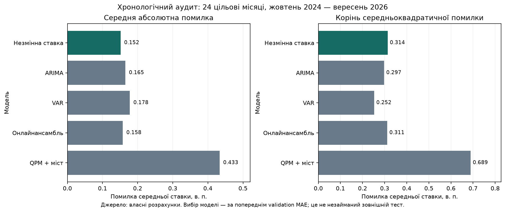
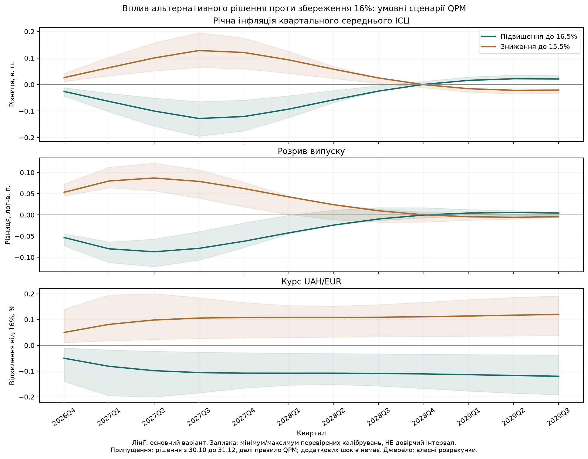

Інформаційна дата: 22 жовтня 2026 року. Робоче дослідження для NBU University Challenge 2026; рекомендація потребує погодження команди перед поданням. Не використано рішення 29 жовтня та листопадовий Інфляційний звіт.
Робоча рекомендація — помірне підвищення облікової ставки до 16,5% (+50 б. п.). Основна альтернатива — збереження 16%; зниження до 15,5% зараз має слабшу доказову основу. Аргументи за посилення: прискорення вересневої загальної й базової інфляції, високі очікування, тиск на резерви. Аргументи проти: негативні шоки пропозиції й випуску та ще не завершена передача попередніх підвищень. Величина 50 б. п. — помірний досліджений крок, а не доведений математичний оптимум.
Прогноз фактичної середньої ставки за листопад — 16.00%. Це окреме питання: статистичний прогноз поведінки НБУ може відрізнятися від нашої рекомендації. Не підганяємо прогноз під бажане рішення.
• Вересень: інфляція 10% р/р, 2,1% м/м; базова 8,8% р/р, 2% м/м. Послуги 13,7% р/р. НБУ підтверджує суттєве перевищення липневого прогнозу коментар 12.10. Не екстраполюємо один сезонно не скоригований місяць множенням на 12.
• Очікування через 12 місяців: бізнес 11,5%, домогосподарства 14,13%, аналітики 8,26%. Дати різні: бізнес опитаний 30.07–28.08, домогосподарства — останнє значення серпня, аналітики — вересня. Це не одна синхронна оцінка й не фактична майбутня інфляція.
• ІОДА вересня 48,23 при нейтральній межі 50; квартальний ІДО 100,8 проти 107,0 при межі 100. Сигнали слабшої активності не можна ігнорувати при виборі ставки.
• Резерви на 01.10 47,1018 млрд USD, за вересень −3,2%; балансові продажі валюти НБУ 5,4499 млрд USD реліз 07.10. Стабільний середній курс сам по собі не означає відсутності валютного тиску.
Новий доказовий датасет: 7754 спостереження, 62 показники, з одиницями, джерелами, локаторами, статусами та датами публікації. Лише 27 рядків мають підтверджену дату публікації використаного джерела; вона не обов'язково є датою першої публікації конкретного числа. Інші дати явно позначені як невідомі. Це не строгий історичний real-time датасет. Новий вересневий резервний snapshot використано для політичних ризиків, не для оцінювання VAR на одному спостереженні.
Порівняні незмінна ставка, два локальні тренди, три ridge-моделі, ARIMA, SARIMA, VAR, QPM + місячний міст та два онлайнансамблі. Validation: 68 цільових місяців, лютий 2019 — вересень 2024; пізніший аудит: 24 місяці, жовтень 2024 — вересень 2026. Правило вибору — найнижчий validation MAE, далі RMSE. Вибрано NO_CHANGE; за аудитом модель повторно не переобирали.
Історичні дати вже були видимі в попередньому дослідженні. Це чесно позначений хронологічний аудит, не новий незайманий зовнішній тест. Масштабування ridge, навчальні цілі, онлайнваги й інтервали використовують лише завершене минуле. Поточний неповний жовтень не є готовою міткою.
| model | n | MAE_pp | RMSE_pp | coverage80 | coverage95 |
|---|---|---|---|---|---|
| NO_CHANGE | 24 | 0.1515 | 0.3135 | 0.9167 | 1.0 |
| ONLINE_ARIMA_SHRINK | 24 | 0.1556 | 0.3122 | 0.875 | 1.0 |
| ONLINE_BLEND_SHRINK | 24 | 0.1578 | 0.3113 | 0.875 | 1.0 |
| ARIMA | 24 | 0.1652 | 0.2972 | 0.9167 | 1.0 |
| ridge_policy_100_60m | 24 | 0.1672 | 0.3051 | 0.9167 | 1.0 |
| VAR | 24 | 0.1779 | 0.2523 | 0.9167 | 1.0 |
| ridge_policy_10 | 24 | 0.1901 | 0.299 | 0.9583 | 1.0 |
| ridge_macro_100 | 24 | 0.2507 | 0.3823 | 0.875 | 1.0 |
| DRIFT_6 | 24 | 0.3017 | 0.3837 | 1.0 | 1.0 |
| SARIMA | 24 | 0.3364 | 0.4016 | 1.0 | 1.0 |
| DRIFT_12 | 24 | 0.3439 | 0.4715 | 0.9583 | 1.0 |
| QPM_BRIDGE | 24 | 0.4335 | 0.6886 | 0.9583 | 1.0 |

VAR має нижчий audit RMSE, але вищий MAE, ніж незмінна ставка. Парний блоковий bootstrap різниць MAE не дає переконливих доказів переваги ARIMA чи VAR. Не обираємо метрику після того, як побачили зручного переможця.
Листопадовий прогноз 16.00%; історично калібрований інтервал 80%: 15.50–16.50%, 95%: 14.00–18.00%. Це симетричні квантилі минулих помилок, не гарантія покриття війни чи позачергових рішень. На 24 audit-місяцях відповідне покриття baseline 91.7% та 100.0%; вибірка мала й режим залежний. За календарем НБУ планові рішення — 29 жовтня та 17 грудня. Якщо жовтневе рішення діятиме весь листопад без позачергової зміни, середня листопада дорівнюватиме його рівню.
Перевірено 109 кандидатів: курсове згладжування, сила реакції на інфляцію, інерція ставки, пам'ять інфляції й масштаб цінового шоку. Структурні рівняння та первинний шаблон збережені. Коефіцієнти перебираються в явних межах; це не повне Bayesian/MLE-оцінювання і не причинна ідентифікація.
Масштаби помилок визначені на development-origin 2015Q4–2019Q4. Налаштування порівнювалися на validation-origin 2020Q1–2022Q4: однаково зважена стандартизована Huber-втрата прогнозів ставки, інфляції, курсу й ВВП на один квартал. Пізніший audit-origin 2023Q1–2026Q2 не використано для відбору. Для останнього GDP2026Q3 факту немає: його не рахують як наявну ціль.
Найкраще налаштування поліпшило validation-критерій на 4.02%. За попередньо заданим правилом потрібні щонайменше 5%, тому основний варіант збережений: навчальне калібрування. Найкращий validation-кандидат залишений у перевірці чутливості. Не стверджуємо, що калібрування стало «ідеальним» лише тому, що сітка велика; 12 validation-кварталів замало для впевненого оцінювання багатьох параметрів.
Порівнюємо 15,5 / 16 / 16,5%. Експеримент припускає: ставка 16% до 29 жовтня включно; новий рівень з 30 жовтня до 31 грудня; з 2027Q1 — ендогенне правило. Тоді середня Q4: 15,6576 / 16 / 16,3424%. Це гіпотетичне утримання в Q4, а не прогноз або обіцянка не переглядати рішення на засіданні 17 грудня.
Рівняння розв'язано спільно на 12 кварталів, із заздалегідь заданими сценарними шоками та стабільною термінальною умовою. Немає підміни раціональних очікувань механічним додаванням незалежних імпульсів. Структурні сценарії стартують із відфільтрованого стану 2026Q3; доступні жовтневі курсові спостереження не введені як додаткові вимірювання, а повний жовтневий ІСЦ на 22 жовтня ще невідомий. Квартальна модель не відтворює точний денний час передачі рішення всередині жовтня.
За основного калібрування підвищення до 16,5% проти 16% дає в 2027Q3:
• річна інфляція квартального середнього нижча на 0.128 в. п.;
• розрив випуску нижчий на 0.079 лог-в. п.;
• UAH/EUR нижчий на 0.106%, тобто модельна гривня трохи сильніша.
Найбільше модельне зниження інфляції становить близько 0.128 в. п.. Для масштабу: одноквартальний audit RMSE інфляції QPM близько 1.956 лог-в. п. Це різні об'єкти/горизонти, але порівняння показує, чому маленьку різницю сценаріїв не можна представляти як точно виміряний емпіричний ефект.

Перевірено відсутність додаткових шоків, умовний ціновий шок +2 річні лог-в. п. в Q4 та шок премії за ризик +2 в. п. Величини шоків — припущення, а не оцінений прогноз чи їх ймовірності. Варіанти курсового згладжування, довгострокової премії та найкращого validation-калібрування змінюють результати. Окремо перевірено точне перетворення цінових цілей: 5 лог-% у шаблоні відповідає 5,1271% звичайного темпу, а точним 5% відповідає 4,8790 лог-%. Ця різниця порівнянна з малим модельним ефектом рішення; вона не має приховано визначати точність рекомендації. Додано варіант із точними цілями України/єврозони та чутливість втрат до 5% / 5,1271%. Заливка на графіку — діапазон перевірених параметричних варіантів, не довірчий інтервал.
Таблиця нижче — умовний макросценарій основного калібрування без додаткових шоків. Автоматична траєкторія ще не є повністю узгодженим із новими ризиками фінальним макропрогнозом команди: для цього потрібні погоджені зовнішні, фіскальні й енергетичні припущення. Інфляція — зміна сезонно скоригованого квартального середнього ІСЦ до відповідного кварталу попереднього року, не грудень до грудня і не місячна інфляція. GDPyoy — зміна модельного квартального реального ВВП; gap — латентна модельна оцінка. Курс — грн/EUR, не грн/USD. Не трактувати ці значення як усі вже затверджені прогнозні орієнтири команди.
| period | policy | ir_pol | inflation_yoy_pct | gdp_yoy_pct | l_gdp_gap | fx_uah_per_eur |
|---|---|---|---|---|---|---|
| 2026Q4 | cut_15_5 | 15.658 | 9.19 | 1.121 | 0.409 | 51.49 |
| 2027Q4 | cut_15_5 | 12.317 | 5.034 | 1.095 | -0.63 | 51.866 |
| 2028Q4 | cut_15_5 | 9.933 | 4.025 | 2.346 | -0.396 | 52.668 |
| 2029Q3 | cut_15_5 | 9.519 | 4.664 | 2.565 | -0.065 | 53.234 |
| 2026Q4 | hold_16 | 16.0 | 9.164 | 1.067 | 0.355 | 51.464 |
| 2027Q4 | hold_16 | 12.337 | 4.913 | 1.087 | -0.693 | 51.81 |
| 2028Q4 | hold_16 | 9.941 | 4.026 | 2.409 | -0.397 | 52.61 |
| 2029Q3 | hold_16 | 9.538 | 4.685 | 2.579 | -0.061 | 53.17 |
| 2026Q4 | hike_16_5 | 16.342 | 9.138 | 1.013 | 0.302 | 51.438 |
| 2027Q4 | hike_16_5 | 12.357 | 4.792 | 1.078 | -0.755 | 51.754 |
| 2028Q4 | hike_16_5 | 9.948 | 4.026 | 2.472 | -0.397 | 52.551 |
| 2029Q3 | hike_16_5 | 9.556 | 4.706 | 2.594 | -0.057 | 53.106 |
| 2026Q4 | endogenous_rule | 15.482 | 9.203 | 1.149 | 0.436 | 51.503 |
| 2027Q4 | endogenous_rule | 12.307 | 5.096 | 1.1 | -0.599 | 51.894 |
| 2028Q4 | endogenous_rule | 9.929 | 4.025 | 2.313 | -0.396 | 52.698 |
| 2029Q3 | endogenous_rule | 9.51 | 4.653 | 2.557 | -0.068 | 53.267 |
Різке довгострокове зниження ставки залишається властивістю шаблону: припущення про нейтральну ставку, тренди, відсутність нових шоків і повернення до правила. Воно не доводить, що НБУ фактично знизить ставку за цією траєкторією. Окремої структурної моделі базової інфляції, резервів, бюджету та валютних обмежень тут немає.
Діагностична функція втрат — інфляційне відхилення від цілі, розрив випуску та зміни ставки. Перевірено ваги випуску 0 / 0,25 / 1 / 2 і згладжування ставки 0 / 0,1 / 1, а також цілі 5% і 5,1271% для перевірки логарифмічного наближення. Це припущення дослідника, не оцінені суспільні переваги. Нормативна ціль НБУ залишається 5%.
За ваг випуску 1 і згладжування 0,1 в основному варіанті:
| policy | discounted_loss |
|---|---|
| cut_15_5 | 4.07582 |
| hold_16 | 3.99767 |
| hike_16_5 | 3.93735 |
За інших допустимих ваг і параметрів перемагають також збереження та зниження. Кількість перемог у сітці не є ймовірністю правильності рішення. Вибір 16,5% захищаємо передусім як обережну реакцію на інфляційні й валютні ризики, з чітким визнанням втрат випуску та модельної невизначеності.
Чинні підтверджені параметри: ДС овернайт 16%, забезпечені кредити овернайт 20%; останній 14-денний тендер рефінансування 20%. З 07.08 тримісячні ДС — процентні тендери з оголошеним обсягом раз на два тижні, а не старий фіксований спред модернізація.
Наша пропозиція при 16,5%: зберегти ДС овернайт на рівні облікової; зберегти спред забезпеченого кредиту овернайт +400 б. п., тобто 20,5%. Це явна пропозиція, не автоматичне чинне правило. Зберегти ринковий формат 3M-ДС і зв'язок із строковими депозитами; точний обсяг наступного тендера без розрахунку ліквідності не призначаємо. Стежити за UONIA, депозитними ставками/обсягами та результатами аукціонів.
Валютна рекомендація: керована гнучкість, згладжування надмірних коливань, обережна поетапна лібералізація за передумовами. Не обіцяти фіксований курс чи широку негайну відміну капітальних обмежень за підвищених ризиків резервів. Повний юридичний аудит постанови №18 не виконано; конкретні ліміти переказів/репатріації не пропонуємо змінювати без окремої перевірки та оцінки попиту.
На користь збереження замість підвищення: стійке уповільнення сезонно скоригованого базового тиску, ознаки глибшого падіння попиту та зайнятості, стабілізація очікувань і валютного попиту. На користь подальшого посилення: повторні широкі цінові сюрпризи, погіршення очікувань, стійкий валютний тиск. Для зниження: сукупні докази дезінфляції й охолодження попиту за забезпеченого зовнішнього фінансування. Не вигадуємо офіційних числових порогів цих реакцій.
Комунікаційний меседж: «Пропонуємо помірно посилити процентну політику для обмеження стійкого цінового тиску й підтримки гривневих заощаджень. Рішення не усуває воєнні руйнування, тому поєднуємо його з керованою курсовою гнучкістю й обережним підходом до обмежень. Наступні кроки залежать від інфляції, очікувань, валютного ринку та стану економіки».
Є дані, відтворювані моделі, чесний відбір, 109 перевірок калібрування, структурні сценарії, альтернативи, ризики й робоча рекомендація. Немає доказу найкращої моделі серед усіх можливих, причинної оцінки кожного каналу, повного набору real-time вінтажів, фінальної командної згоди та конкурсної презентації. Результати 3M-аукціонів, депозитна трансмісія, виконання бюджету та календар допомоги залишаються наступними цільовими доповненнями. Технічні вимоги з листа НБУ ще не прочитані.
Основні докази: політична записка, аудит даних, місячна методика, протокол агентів. Числа й діагностика: results/2026-10-22-research/. Офлайновий запуск: python tools/run_research.py.